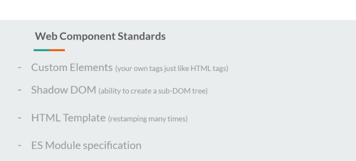

<div class="content-overview">
    <div class="inner-style">
        <h2 class="content-heading"><span class="style-scope ">4</span>. <span
                class="style-scope google-codelab-step">Web Component specifications</span></h2>
        <div> To define web components, we can say create a reusable custom element in any technology and use its
            functionality inside your web-apps by using the element. This is what web components are.
            <div style="padding-top: 14px;">As per MDN web docs, Web components are defined as:</div>
            <h3 style="text-align: center; color: gray;">Web Components is a suite of different technologies allowing
                you to create reusable custom elements — with their functionality encapsulated away from the rest of
                your code — and utilize them in your web apps.</h3>
            <div>The amazing thing about web components is that they only work on the web standards without the
                involvement of third-party libraries.
                <div style="padding-top: 14px;">Now to understand this term web component which has a bigger meaning in
                    a simple way, lets try to understand what it actually contains.
                    As mentioned before, web components follow certain web standards and work as per those. These web
                    component specifications are:</div>
            </div>
        </div>
        <div>
            <ul style="font-weight: bold;">
                <li style="padding: 5px;">Custom Elements</li>
                <li style="padding: 5px;">Shadow DOM</li>
                <li style="padding: 5px;">HTML Template</li>
                <li style="padding: 5px;">ES Modules</li>
            </ul>
            <div style="padding-top: 14px;">Each one of these standards are independently capable of being used. To
                leverage Web Components, we combine these four web standards and use and re-use our created custom
                elements built with the functionality of the holding framework in any of the frameworks/libraries,
                vanilla JavaScript etc.</div>
            <div style="text-align: center; "></div>
            <div class="stuck-code-block"><strong>TLDR; </strong>If you want to directly jump to the coding part, you are free to skip this
                section and proceed to the next. Wanting to read more about the basis on which Angular Elements actually
                work, continue reading further in this section
            </div>
        </div>
        <div>Let us look at each one of these one by one.</div>

        <h2>First Spec: Custom Elements</h2>
        <p>This is the first standard of Web component spec which allows us to create our own tags just like another
            HTML element but we decide which behavior should be contained inside that tag.
            A Custom Element can be created as:</p>
        <pre style="background: darkgray;"><code style=" color: black;">class MyElement extends HTMLElement {{ '{' }} 
    […]
{{ '}' }}
customElements.define("my-element", MyElement);
              </code></pre>
        <p>More about Custom Elements and the two types of custom elements that can be created can be read <a
                style="font-weight: bold;"
                href="https://developers.google.com/web/fundamentals/web-components/customelements"
                target="_blank">here</a>.</p>

        <h2>Second Spec: Shadow DOM</h2>
        <p>The shadow DOM specification for web components basically means that the custom element would have supported
            style encapsulation and it wouldn’t conflict with the ID or class of your other elements in the DOM. It does
            so by creating a sub-DOM tree of the element.
            These elements enters as children of the element and have their own encapsulated styles.</p>
        <p>This works by using &lt;slot&gt; element as a placeholder for the the custom element. This, therefore, gets
            added in a sub-DOM tree like below:</p>
        <pre style="background: darkgray;"><code style=" color: black;">&lt;section&gt;
    &lt;div&gt;
        &lt;slot&gt;&lt;/slot&gt; //Content of the custom element gets placed here
    &lt;/div&gt;
&lt;/section&gt;
              
    // Custom Element
&lt;my-element&gt;
        &lt;button&gt;Custom button&lt;/button&gt;
&lt;my-element&gt;
</code></pre>

        <div>More on the DOM API, Shadow DOM, slots etc. can be read here in this amazing <a
                href="https://developers.google.com/web/fundamentals/web-components/shadowdom"
                target="_blank">article</a>.</div>
        <h2>Third Spec: HTML Template</h2>
        <p>This third standard of the web component basically helps it to be have some chunk to the template to be
            loaded at runtime. This is achieved by using the <template></template> tag.
            Whatever is placed inside these template tags can be rendered at runtime by cloning and inserting them
            though JS.</p>
        <p>After retrieving the template tag in JS, you can activate it using: </p>
        <h3 style="text-align: center; color: gray;">var clonedObj = document.importNode(templateRef.content, true);
        </h3>
        <p>We can then append this using to the DOM as a sub-DOM tree.</p>

        <h2>Final Spec: ES Module Specification</h2>
        <p>This specification helps you integrate your custom element with the different JS apps by defining the
            interface using the script.</p>
        <pre style="background: darkgray;"><code style=" color: black;">
        &lt;script type="module"&gt;
            import {{'{'}}example{{'}'}} from ‘@example/example’;
        &lt;/script&gt;
    </code></pre>
        <p>This will then allow us to use the custom tag inside our app like:</p>
        <pre style="background: darkgray;"><code style=" color: black;">&lt;example&gt;…&lt;/example&gt;</code></pre>
        <p>These four web component specifications help us understand how and why the components are to be used in which
            ever framework/JS app as you wish to.</p>
        <p>Now that we have an understanding of Web components, in general, custom elements, Shadow DOM etc. We can
            proceed to create one custom element inside the Angular framework and be able to use it inside other library
            projects.</p>
    </div>
</div>